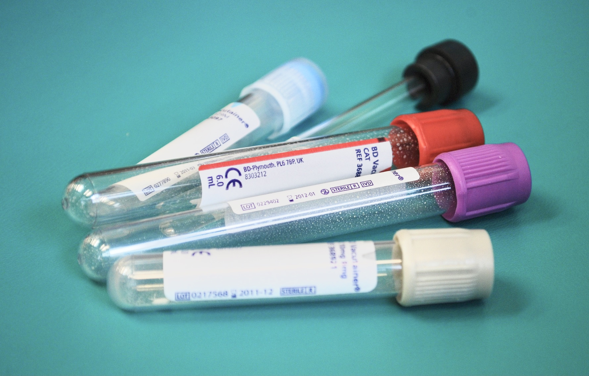

Wichtige Untersuchungen sind zum Beispiel:
um nur einige zu nennen. |

Labordiagnostik
Bei der Früherkennung chronischer Entzündungen und deren Folgen nimmt die erweiterte Labordiagnostik einen wichtigen Stellenwert ein. Die Untersuchung erfolgt mittels Blutentnahme oder Stuhlprobe.
Da das Kassenbudget gesetzlicher Krankenkassen oft nur Minimaldiagnostik erlaubt, werden stille Entzündungsprozesse erst wahrgenommen, wenn schon der erste körperliche Schaden entstanden ist. Eine entsprechende Frühdiagnostik ermöglicht gezielte Prävention und eine objektive Verlaufsbeobachtung.